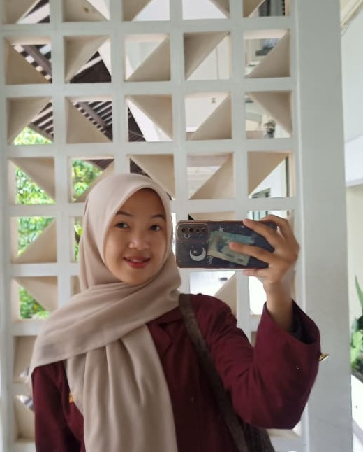

Home | Profile | About | Gallery | Contact
My Profile

Nama: Karin Naswa Syaiba
NIM: 252505017
Semester: 2
Prodi: Sistem Informasi
FKOM - Masoem University
Hobi: Mendengarkan musik, menonton film, dan belajar coding
Tujuan: Mengembangkan diri dan berbagi ilmu melalui media digital